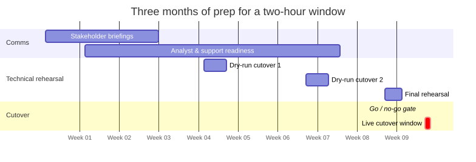

What the two-hour cutover window really cost
The visible part of the migration was two hours. The part that actually decided whether it worked was three months long, and nobody outside the team ever saw it. The technical mechanism — failover groups, role reconciliation, what silently doesn't replicate — is the previous post. This one is about the part that doesn't show up in a Snowflake docs page: getting several hundred people ready for an outage window they didn't choose the timing of, and building enough confidence in the plan that "go" was a genuinely informed decision, not a hope.
The pattern holds everywhere it's been written up publicly. GitHub's 2014 MySQL migration cut over in 13 minutes — after weeks of replaying real production traffic against the new cluster and running each configuration through 12-hour soak tests before it was trusted anywhere near customers. Figma's 2023 database split held its cutover under a minute per partition, verified via replica-parity checks, with reverse replication kept live specifically so there was a real way back if something looked wrong. Neither company got a short window by accident. The window is short because of the invisible work, not despite it — the two are the same investment, just measured at different points.

Illustrative, not the literal calendar — but the shape is real: comms and rehearsal fill almost the entire timeline, and the cutover itself is the last, smallest bar.
Google's own SRE Workbook draws a line worth borrowing: change control is the technical mechanics of a change; change management is preparing the actual humans — engineering, product, the analyst community, support — for it. We treated them as two separate workstreams with two separate owners, running in parallel from day one, because the SRE literature's other well-known finding is the reason you can't skip either: Google states that roughly 70% of outages trace back to changes in a live system. A comms programme isn't overhead sitting around the technical work. It's the other half of the same risk surface.
Coordinating a single window across time zones has no clean answer, and I won't pretend we found one — there is no hour that's good for everyone, and the honest version of that conversation is picking the least-bad option deliberately and saying so, weeks in advance, rather than discovering the complaint after the fact. What made the window itself defensible was further upstream: go/no-go criteria written down before the first rehearsal, not improvised in the room on the day.

Every stage can fail back to "keep preparing" without it being anyone's fault. The only stage that can't loop back is the one after the gate.
The reason that gate needed to be real, not theatre, is that this goes wrong constantly, in public, at companies with far more resource than we had. TSB's 2018 core banking migration locked roughly 5.2 million customers out of their accounts and cost the bank £48.65m in FCA and PRA fines for inadequate planning and weak oversight of the migration. RBS, NatWest, and Ulster Bank were fined a combined £56m after a 2012 batch-processing upgrade was rolled back — without anyone having tested that the rollback itself actually worked. Both are the same failure at different points: confidence that outran verification. A go/no-go gate that can actually say no is what stands between "we planned for this" and becoming the next regulatory case study.
None of this is about the technology being difficult. It's about the fact that a two-hour number on a change calendar is a promise to several hundred people, and the only way to keep it honestly is to spend the months beforehand where nobody's watching.
If you're staring down a similar consolidation and want a second pair of eyes on the plan — the comms as much as the cutover — that's exactly the kind of conversation worth having before a date goes on a calendar.